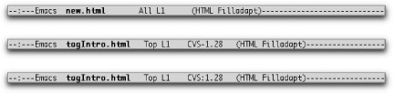

{% include JB/setup %}
{% raw %}
<div>
<div class="book" xml:lang="en"><div class="book"><div class="book"><div class="book"><h1 class="title"><a id="gnu3-CHP-12-SECT-6" class="calibre1"></a>VC Mode Indicators</h1></div></div></div><p class="copyright">VC grabs a bit of the mode line for <a id="gnu3-CHP-12-ITERM-2878" class="calibre2"></a>each
buffer visiting a registered file and tries to use it to keep you
informed of the version control state of that file.
You'll notice that when a buffer is visiting a
version-controlled file, the mode tags part of the mode line (shown
in parentheses) shows the name of your version control system and a
revision number for the file.</p><p class="copyright">When those two parts are separated by a dash, the file is not yet
checked out; when they're separated by a colon, the
file has been checked out, and the revision number is the one the
file had when you checked it out. Note that since most people use
concurrent version control systems these days, in which you
don't check files out or obtain locks, you can think
of the dash as meaning unmodified, while the colon means there have
been changes that are not yet committed to the repository.</p><p class="copyright">If you don't see these indicators, the file
isn't registered yet. These three states are
illustrated in <a class="calibre2" href="ch12s06.html#gnu3-CHP-12-FIG-3" title="Figure 12-3. Mode lines showing a file that is not under version control, one that is unchanged with respect to the repository, and one that has had changes saved but not yet committed.">Figure 12-3</a>.</p><div class="figure"><a id="gnu3-CHP-12-FIG-3" class="calibre2"></a><div class="figure-contents"><div class="mediaobject"><a id="I_12_tt658" class="calibre2"></a></div></div><p class="title3"><b class="calibre25">Figure 12-3. Mode lines showing a file that is not under version control, one that is unchanged with respect to the repository, and one that has had changes saved but not yet committed.</b></p></div><br class="book"/></div></div>

{% endraw %}

